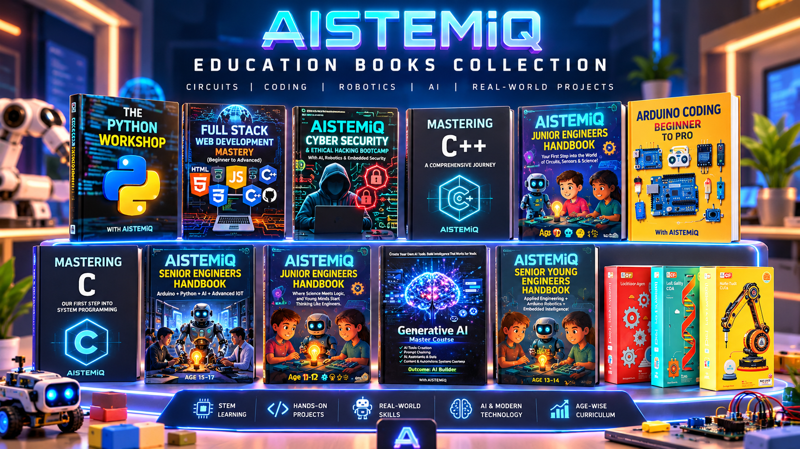

Understand
Build strong foundations through clear concepts and guided discovery.
Curiosity today. Innovation tomorrow. Explore learning paths ↗
A progressive journey from discovering circuits and science to engineering intelligent systems, writing code and building real-world technology projects.

MORE THAN A COLLECTION OF BOOKS
AISTEMiQ is built around a simple idea: help learners understand the principles behind technology before asking them to build increasingly complex systems.
Start with science, circuits and sensors. Progress into logical thinking, robotics and embedded systems. Then explore advanced programming, AI concepts and engineering challenges.
Build strong foundations through clear concepts and guided discovery.
Explore circuits, components, code and technology in practical activities.
Connect ideas and apply structured problem-solving to projects.
Develop the confidence to design, test and improve original ideas.
THE AGE-WISE LEARNING MAP
Move down the pathway to discover how learning progresses from curiosity to pre-engineering.
Discovering science and building curiosity.
Start with the fundamentals of electronics, circuits, sensors and energy. Encourage learners to ask questions, explore components safely and understand how everyday technology works.
Build curiosity, component awareness, safe habits and confidence through guided activities.
Where science meets logic.
Move beyond basic discovery and connect components into functional systems. Explore sensor data, simple automation, circuit construction and structured problem-solving.
Develop analytical thinking and start turning scientific ideas into working builds.
From experimentation to engineering thinking.
Explore embedded electronics, robotics fundamentals, sensor calibration, programming logic and early AI concepts. Learn to plan a build, connect subsystems and troubleshoot methodically.
Strengthen design discipline, technical reasoning and intermediate project skills.
Design intelligent systems. Build real technology.
Explore more advanced electronics, robotics, Python foundations, AI concepts, IoT architecture and engineering problem-solving. Work toward designing, testing and improving connected systems.
Develop pre-engineering confidence through systems thinking and practical technology challenges.
CODING FOUNDATION & SPECIALISATIONS
Explore programming and technical pathways that connect logical thinking with software, hardware and digital security.
Start with variables, conditions, loops, functions and structured problem-solving.
Mastering C ↗Progress into structured software development, computational thinking and object-oriented concepts.
Mastering C++ ↗Learn programming foundations, data structures, functions and project-oriented coding.
The Python Workshop ↗Connect code to physical systems through LEDs, sensors, motors, displays and automation builds.
Arduino Coding Mastery ↗Explore how websites and web applications combine interface design, programming and data.
Enquire about this track ↗Explore secure programming, digital defence, network concepts and responsible security practice.
Explore cybersecurity book ↗Move beyond simply using AI tools. Explore prompt engineering, AI system design, automation workflows and the foundations of building practical AI-powered applications.
Generative AI Master Course ↗THE AISTEMiQ BOOKSHELF
Explore the handbook collection and coding resources. Digital purchasing links can be added when your e-book store is ready.
Discover age-based engineering handbooks alongside focused learning resources in programming, electronics, AI and cybersecurity.
Browse the books ↓Circuits, sensors, science and guided experimentation.
Enquire about this book ↗Logic, electronic systems, sensors and automation.
Enquire about this book ↗Embedded electronics, robotics and engineering thinking.
Enquire about this book ↗Advanced STEM, Arduino, Python, AI and IoT concepts.
Enquire about this book ↗Structured programming, logic and computational problem-solving.
Enquire about this book ↗Programming, object-oriented concepts and problem-solving.
Enquire about this book ↗Python fundamentals, exercises and practical programming.
Enquire about this book ↗Sensor projects, microcontrollers, robotics and automation.
Enquire about this book ↗Prompting, AI systems, automation and AI product building.
Enquire about this book ↗Secure programming, digital defence and ethical security practice.
Enquire about this book ↗COMING IN A FUTURE RELEASE
We're planning a digital bookshelf for AISTEMiQ e-books, downloadable learning resources and selected publications. Amazon book listings may also be linked here when the official product pages are available.
FOR PARENTS, EDUCATORS & SCHOOLS
Discuss curriculum access, learning resources, school programs or AI lab requirements.